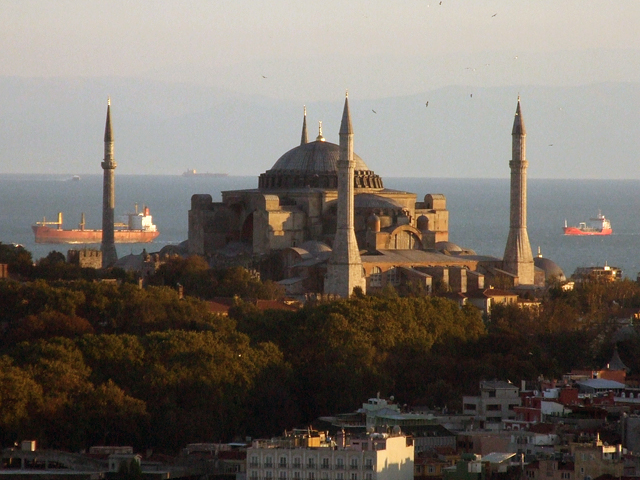
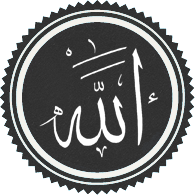

Church History
The Christian Church Since the Time of the Apostles
Intro
Worksheet: worksheet.html

Church History by Jim J. Moore is licensed under a Creative Commons Attribution 4.0 International License.
Based on a source code at https://github.com/jdigger/presentation-church-history.
The City of God
Writing
“The City of God” was Augustine’s most massive and comprehensive work
It spans twenty-two volumes and took him fifteen years to write
Reason

It was his response to accusations that Rome had fallen because she had converted to Christianity and forsaken the gods that had made her great
Theme
Humanity is divided into two fundamental communities (cities)
They are named after where their loves are found:
the Earthly City
the City of God
All of history can be seen to follow this basic pattern
Earthly City of Rome
God’s Grace
The very thing that had sustained Rome all those years was not paganism, but the grace of God
Not Wimpy

She did not fall because she had turned to “wimpy” virtues like humility and compassion
Cicero and others, during the height of Roman power, had noted that those were some of the virtues that had made her great
Non-Christian “Virtues”
Rather, Rome fell because of her non-Christian “virtues,” which had done so much damage that by the time Christianity came along the wound was already fatal
The City of God
Joining With Christ
The Church, of which Christ is the head, is the earthly manifestation of Christ
As such, the best way to join with Christ is to join with the Church
Interpretation

Interpretation is done through Christ (the Word) through His representative on earth (the Church) to the individual Christian
So the Church acts as the principle interpreter of Christ for the Christian, just as Christ acts as the principle interpreter of God for the Church
Infallibility of the Catholic Church
This doctrine is what gave rise to the ideas of the infallibility of the Catholic Church, and that the individual cannot be “trusted” to understand the Bible himself, but could only do so by way of the Church
Made of Fallen Humans
Fine in theory, but as an institution made up by Fallen humans, there were, as we know, “problems” with the theory…
The Holy Roman Empire and the Papacy
2.JPG)
Charlemagne

Charlemagne, a Frank, reconquered much of Europe and was crowned Emperor by the Pope on Christmas Day, 800 A.D., which started the Holy Roman Empire
Charlemagne’s dream was to recreate the imperial rule of the Caesars and the building on earth of St. Augustine’s City of God
Dissolution of Power
Not long after Charlemagne died, the little “empire” that there was started falling apart
Holy? Roman? Empire?
As Voltaire quipped later, “The Holy Roman Empire was neither Holy, nor Roman, nor an Empire.”
One obvious geographic disparity was that through most of its history Rome wasn’t part of the Empire.
Institutional Power
The Papacy would vary greatly throughout the period from strong to weak and strong again, but would in general be by far the strongest institution in Europe
Investiture
The practice of buying Church office would come and go, as well as the nobility insisting on appointing their own people into Church office
Officially resolved in 1122 with the Concordat of Worms that effectively gave the kings the right to put forward their candidates, but it was up to the church to agree
Because there was so much wealth and power to be had by being a church leader, the nobles remained heavily “involved”; however the quality of the candidates increased a great deal
Holy Vicar?
The level of “holiness” that the Papacy was leading with was often worse than horrid
Missing Records
It’s important to remember that it’s not as if we have great records of what really happened
However, given that the “history is written by the victors” and the sheer relative volume of the accounts, there’s good reason to believe there’s a great deal of truth to the accounts
Pope John XII

A low point was Pope John XII, who became Pope at the age of sixteen
He led a life of total debauchery, including hosting orgies at the Vatican
(That’s the consensus account. Partisans said much worse.)
Contradicting The Pope?
If the Vicar of Christ — essentially a manifestation of Christ on Earth — says that I should run after the pleasures of this world, what am I — an uneducated Christian — to do?
(It was illegal and heretical to contradict the Pope. You could easily get yourself and your loved ones tortured and killed for complaining)
Papal Legitimacy

From the time of Constantine on, you could only be recognized as a “legitimate” ruler if the Pope said you were
Consolidating Power
That (along with lots of other deals and the like that were brokered) gave the Pope a tremendous amount of power
Fit Catholic Ruler?
If he said that you were not a fit Catholic, your crown could — and would — be taken from you by your own people
Not Absolute
That’s not to say that the Pope had absolute power and was never questioned
People did get fed up from time to time with the excesses of the Papacy, its constant fiddling in politics, and its rule over every single aspect life
Reformations
When that happened, the power and prestige of the Papacy would be diminished or nearly destroyed until reforms would take place to appease the people
Forcibly Removed
Sometimes, the Pope would even be forcibly removed from office by a king
Pope Boniface VIII
For example, in 1303 King Philip IV of France arrested Pope Boniface VIII for explicitly claiming authority over kings, and had a new Pope elected
Known as the “Babylonian Captivity of the Papacy,” the Papacy was moved from Rome to Avignon, France, for seventy years

The Western Schism
The return to Rome sparked a “constitutional crisis” in the Church, known as the Western Schism
Urban IV
The first Pope elected after the return to Rome, Urban IV, turns out to be “highly objectionable” to the cardinals that elected him, so they elect a new one: Clement VII
The problem is, Pope Urban IV refuses to leave
Another Pope Is Elected
To try and break the power struggle between the two rival courts after the initial claimants had died, they hold a council in 1409 to reach an agreement, and elect a new Pope
The first courts, however, argue that they are the legitimate Pope and refuse to go; thus there were three Popes at one time

Western Schism Resolution
In 1417 another Council established Council superiority to the Pope, and elects a fouth Pope that finally becomes “The Pope” after convincing two of them to step aside (and marginalized the third)
Council Superiority To The Pope?
In 1430 the Pope reversed that agreement and places himself above the councils, which is how it still stands
The Source of All Knowledge

Fount of Learning
Since the church was about the only keeper of any of the knowledge that had come before — and actively repressed anything that it thought would be potentially frivolous or dangerous — it had a monopoly on effectively ALL learning
Knowing Better
Not only was it unwise to question Catholic teachings because of possible damnation (or even because of persecution) but because the church likely really did know better than you
Practical
That tied them very, very tightly to every aspect of life
Unthinkable
The church had an answer for everything (especially once Scholasticism came on the scene), so seeking an answer from anywhere other than established church teachings on the subject was – literally – unthinkable
The Inquisition

Partners
The church and the state often worked side by side to handle their various problems, and this merger can best be seen in the Inquisition

A Restraining Hand
While much of what’s going to be said sounds pretty damning on the clergy to modern ears, the clerics were very much the reasonable and moderating force
The Counter-Reformation Inquisition
In modern times, when we hear of the Inquisition, we think of the Inquisitions held during the Counter-Reformation
However, the Inquisition was an institution developed between the church and the state to “inquire” about people who were potentially dangerous
Potentially Dangerous
The crimes that were “potentially dangerous” were usually heresy or sedition — which were usually viewed to be the same thing
That’s why both the state and the church were involved
Structure of the Inquisition
While the practices involved in an inquisition evolved over hundreds of years, its basic structure remained constant: The state would arrest a potentially dangerous person and “inquire” about their thoughts and activities, and then the church would take their confession and determine the level of guilt
Power of the Sword
The Church could also not perform an execution, banishment, etc
Those were all exclusively the domain of the State
Inquisition Crimes
Crimes worthy of the Inquisition varied from hard-core heresy and treason, to thinking that the Pope was mistaken on something
All that the law required was that you think he was wrong, or that a couple people would think that’s what you think. What you actually did was part of evidence, but not the crime itself
In that same line were the crimes of being a Jew, a general troublemaker, etc.
Torture

Torture was regarded as a very normal and natural way to get information
The church sanctioned its use — though priests were absolutely forbidden to be involved and usually weren’t even allowed to be present
Confessions Under Torture
Confessions could not be taken while being tortured, but the next day
Torture could, according to the church, continue to be used even after the confession due to its “purgative” powers, purging evil from the soul in much the same way that burning did
Burning
Burning for a crime like heresy or witchcraft was done “for the sake of” the person being burned, as a last-ditch effort to free their soul from the corruption that they had been found guilty of

Jeanne d’Arc

If you know what happened to Joan of Arc you should recognize this: She “confessed” to witchcraft while being tortured, but when it came time to give her confession she renounced the “confession” given under torture, and therefore never officially confessed to witchcraft
Joan’s Death

She was still burned for being a witch
She was later canonized as a Saint
The Great Schism

Eastern Orthodoxy
Eastern Orthodoxy is generally seen as starting when Emperor Constantine built Constantinople and moved the capitol there
(The truth is much more complicated than that, of course. However, for our purposes, that will work.)
Doctrinal Friction

There had long been friction within the Church regarding various doctrinal and political practices
Eventually the disagreements between West (Rome) and East (Constantinople) got so bad that in 1040 A.D. the Eastern Orthodox Church was formally separated from the Roman Catholic Church
As the Eastern Patriarch was preparing to celebrate the Lord’s Supper, the Pope’s representative entered the cathedral and placed a letter on the altar, excommunicating the Patriarch and all who followed him
Tensions Growing
For two hundred years prior to the establishment of the Holy Roman Empire, the Eastern emperor named the Bishop of Rome, putting in place culturally Greek bishops loyal to the East
Now the West has had its own emperor for two hundred years, spoke Latin instead of Greek, and Islamic invasions were stressing everyone’s resources
Disappearing Pentarchy
There were five major episcopal sees of the Roman Empire: Rome, Constantinople, Alexandria, Antioch, and Jerusalem
The Islamic conquests of Alexandria, Jerusalem, and Antioch in the 7th century left Rome and Constantinople as the only major Christian communities left
Cultural Differences
In sharp contrast to the West, the East under the Byzantine Empire had continued to thrive
Constantinople was the largest and most sophisticated city in Christendom, with roughly half a million people
It had retained the civic structures, public baths, forums, monuments, and maintained its aqueducts
Degenerate Betrayal of the Faith
The Latins viewed the Byzantine preference for diplomacy and trade over war as duplicitous and degenerate, and their policy of tolerance and assimilation towards Muslims as a corrupt betrayal of the faith
The Disputes
While there were lots of things that led to the split (mostly political), the some of the major doctrinal disputes were over
Papal primacy
the Filioque Controversy
icon veneration
Eastern Uniformity?
Again, a word of caution
Today, when people refer to the Western Church, they mean Roman Catholicism and Protestantism. Just as there are tremendous differences within the “Western Church,” so too in the “Eastern Church” (a.k.a. “Eastern Orthodox”)
However, there is a common heritage and core set of beliefs that make it useful to group them in such a way. But Russian Orthodox is not the same as Greek Orthodox any more than Roman Catholic is the same as Baptist
Eastern Orthodoxy and the Pope

The Bishop of Rome
While the Eastern Church recognized the authority of the Bishop of Rome (i.e., the Pope) and that he had a “special” position in the Church, they disagreed with the West about the extent of his authority
The Eastern Leader
That said, effectively the East held the Emperor in the place of the Pope as the head of both Church and State.
When it came down to it, there was a essentially a disagreement about whether it would be the Pope or the Emperor to lead the Church
The Filioque Controversy

After the Nicene Creed
The Filioque Controversy was mentioned during the analysis of the Nicene Creed while studying the Pelagian heresy
Filioque
Καὶ εἰς τὸ Πνεῦμα τὸ Ἅγιον, τὸ κύριον, τὸ ζῳοποιόν, τὸ ἐκ τοῦ Πατρὸς ἐκπορευόμενον
(And in the Holy Spirit, the Lord, the giver of life, from the Father proceeding)
Et in Spiritum Sanctum, Dominum, et vivificantem: qui ex Patre Filioque procedit
(And in the Holy Spirit, the Lord, and giver of life, who from the Father and the Son proceeds)
Slipping Filioque In
The “and the Son” are a Western addition to the Creed as it was originally agreed on by a Council representing the whole Church, East and West
The East believed that the Holy Spirit proceeds from the Father only, and that to say that He proceeds from the Son as well is to destroy the doctrine of the Trinity
When the West “slipped it in” after the council, it greatly increased tensions between the East and West that never went away
Destroying the Doctrine of the Trinity?
What difference does that make in the Eastern versus Western understandings of the Trinity?
The Eastern understanding has the Father as the “source” of all things (in the “light from light” way we discussed in the Nicene Creed)
The complaint is that not only does “filioque” subordinate the Spirit to the Son, but it confuses the role of the Father and the Son in the Trinity
Legitimate Complaint
The East had a very legitimate complaint against how the Western Church handled the situation
It very much went against the spirit of the Council, which was to give a unified response to heresy
The West, even though it was expressing a more Biblical point of doctrine, broke that unity
Icon Veneration
Honoring Pillars of the Faith
Icon veneration is where people bow down before, kiss, and burn incense to icons of Jesus Christ, the Virgin Mary, and various saints
(An “icon” is a “representation,” so these are pictures, statues, symbols, etc.)
Bowing before an icon is in many ways no different than saluting a flag (another kind of icon) — a way to remember and respect that which the icon points to
Incarnational Miracles
It’s also believed that the icons cause various miracles
To those that follow veneration, the icons are often further examples of incarnational miracles, where God is making himself manifest through the icons (such as a crying image of Mary)
Religious relics hold much the same purpose, such as the healing powers of a piece of the Cross of Christ, or “acheiropoieta” like the Shroud of Turin
It’s a large part of what tends to make the church very beautiful and “otherworldly”
In Rich Company
The problem, of course, is that worshipers of Zeus or other idols have essentially the same understanding
They aren’t praying to the stone or wood, but the god it represents or focusses, like a talisman
A Thorn By Any Other Name

For a great example, remember The Golden Calf
The Icon Pendulum
In 730 the (Eastern) Emperor declared that icon veneration had gotten so out of hand that all icons should be removed, but was opposed by the Pope
By 1054 the pendulum had swung the other way, and the West was now complaining about the East’s “worship” of icons
Icon Veneration In the West
“Icon veneration” has been a continual problem in the West, and as always it’s primarily a matter of degrees
Iconoclasm During the Reformation
During the time of the Reformation, for example, the use of imagery in the Catholic Church had reached an all-time high, and one of the major things the Protestants protested was that the use of such imagery had turned into idolatry
Protestants went into Catholic churches and cathedrals, destroying the statues and images within
Iconoclastic Controversies
There have been many major iconoclastic (“icon destroying”) controversies ever since then, in every major denomination, and the issue continues to pop up
First or Second Commandment?
According to the Talmud tradition, they are the same. Used by Jews, Catholics and Lutherans.
According to the Septuagint tradition, they are distinct. Used by Orthodox and Reformed.
Iconoclasm In the Baptist Church
In the Baptist Church, for example, the iconoclasts have essentially won, which is why it’s often hard to see so much as a picture of Jesus in a Baptist church
Iconoclasm In the Catholic Church
The Catholic Church has mostly suppressed the iconoclasts, and the major Councils since then (e.g., Trent, First Vatican and Second Vatican) have all taken pains to distinguish between veneration and worship
The veneration of many of the saints is so common in Catholicism that it is often seen as being a hair’s breath (if that) from idolatry, and the “hyperdulia” given to Mary is seen as being even more so
Iconoclasm In the Lutheran Church
The Lutheran Church has largely struck a compromise position, but as such it’s been more susceptible to the controversy as it reappears
Theoria

Seeking the Beatific Vision
θεωρία is Greek for “contemplation” in the Philipians 4:8 sense; specifically in service of contemplating beholding God
In both East and West, it has been the primary goal of the monastic life
Theoria in East and West
In the West it led to the development of systematic theology, applying the tools of reason to better knowing the mind and heart of God (e.g., scholasticism)
In the East it led to an emphasis on mysticism, where a pure and ascetic life brings you to “theosis” — union with God
John’s Books
Related to that draw toward mysticism is the East’s special emphasis on the books of the New Testament written by John (i.e., The Gospel of John, 1 John, 2 John, 3 John, Revelation)
A practical consequence of this emphasis is that Jesus is seen much more as the King of Kings and Judge of the Universe
Prevalence of the Holy Spirit
The East also has a much stronger emphasis on the role of the Holy Spirit, and many of the ideas that manifested themselves as Pentecostalism in the West have always been a part of the Eastern Church
Things like further “revelation” was not entirely closed with the closing of Scripture
God’s Incomprehensible Mystery
There’s more emphasis on the incomprehensible mystery of God, so there hasn’t been nearly the scholarship on trying to understand the nature of God in the East that there has been in the West
Mighty Lord
The picture given in Revelation 1:12-18 is typical of how the East views Jesus
The Crusades

The First Three Crusades
The first three crusades (which started shortly after the Schism) showed the West just how “backwards” they were, and they pilliaged all they could in Byzantine lands on their way to Jerusalem

The Fall of Constantinople
Coveting its wealth and power, while the Fourth Crusade explicitly had an explicit ban on attacks on Christian states, the crusaders “got lost” and attacked and sacked Constantinople

Reaction by Pope Innocent III
Pope Innocent III responded to the papal legate with
How, indeed, will the church of the Greeks, no matter how severely she is beset with afflictions and persecutions, return into ecclesiastical union and to a devotion for the Apostolic See, when she has seen in the Latins only an example of perdition and the works of darkness, so that she now, and with reason, detests the Latins more than dogs?
Power Vacuum
In addition to the atrocities committed by Christians upon Christians, the heavily wounded empire could no longer provide a real defense against the Islamic states
Even though the Byzantine Empire was able to regroup and take back Constantinople, the Empire was severely crippled
There was no longer a serious counterforce to the Islamic armies, who were able to sweep through the Near East and continue to control the entire region today
Recent Attempts At East-West Reconciliation

Decree On Ecumenism
…In the study of revelation East and West have followed different methods, and have developed differently their understanding and confession of God’s truth. It is hardly surprising, then, if from time to time one tradition has come nearer to a full appreciation of some aspects of a mystery of revelation than the other, or has expressed it to better advantage. In such cases, these various theological expressions are to be considered often as mutually complementary rather than conflicting…
Two Lungs
Pope John Paul II as recently as 1995 said “the Church must breathe with her two lungs!” to bring together the best of the West’s rational rigor with the East’s mysticism
The Philosopher

Aristotle
A student of Plato, Aristotle (384-322 BC) would go on to greatly surpass his teacher in the scope of his philosophy and the influence it would hold
A much more “practical” thinker, Aristotle was constantly at odds with Plato’s very “other worldly” philosophy
Plato and Aristotle
A famous painting by Raphael of Plato and Aristotle arguing. Plato is pointing up, indicating the logical “Forms.” Aristotle is pointing toward the earth, indicating the importance of staying grounded in observation and experience
Scientist?
While he didn’t do “science”, he was far ahead of everyone else nearly a millenia, and he laid the groundwork for huge swaths of what would become Science
Classical Learning
While Plato is much easier to read because of his numerous stories and illustrations, it’s easier to understand where Aristotle is coming from because he had a much more direct influence on modern Western thought
A great deal of what is referred to as “classical” learning comes directly from him, and when someone refers to “The Philosopher,” they are almost certainly referring to Aristotle
Unity
Aristotle’s passion was in “unity”
He was constantly looking to see how things were related, and to bring together things that he thought should not be divided
Alexander the Great
A very concrete example of Aristotle’s concern for unity can be seen in his influence on his most famous student: Alexander of Macedonia (“Alexander the Great”)
When Alexander conquered the world, he brought along behind his army a huge array of scientists to study the plants, people, animals, rocks, etc. of the areas he conquered
They would eventually have a falling out, largely due to Alexander becoming more and more “Eastern,” and his resentment of Aristotle publishing what he learned (which meant that it was no longer solely Alexander’s intellectual property)
Hellenization
The most important effect Aristotle’s influence on Alexander for our purposes here was Alexander’s passion for the Hellenization (“Greek-ifying”) of the areas he conquered
It was because of that Hellenization that all of the books of the New Testament were written in Greek
To the Ends of the Earth
The unification of trade, language, systems of thought, politics, and the like — later taken advantage of and extended by the Romans — was the reason that the Gospel was able to spread so far and so fast
Just as God used Plato’s philosophy to start “prepping” the gentile nations to hear the Gospel, He used Aristotle and Alexander to “prepare” the world to make the spread of the Gospel far faster and effective than ever before possible
Formal Logic

Developing Logic
Perhaps his single most fundamental contribution to Western thought is his development of formal logic
Obviously, people were using logic before him (just as they were using gravity before Newton), but Aristotle identified what is involved with logic and what is the proper use of logic (specifically around “deduction”)
Two Primary Principles
The two most important aspects of what he identified for our purposes are:
the Law of Non-Contradiction
logic says nothing about whether something is true or false, only if it is valid or invalid
The Law of Non-Contradiction
The Law of Non-Contradiction is simply the way you can test to see if something is a contradiction
We won’t go into much detail, but it says, “P (object) can not be Q (description) and not Q at the same T (time) and in the same R (relationship)”
(Logic is closely related to Mathematics, so mathematical notation is often used)
Non-Contradiction Example
For example, take a statement like “The tomato is red and not red at this particular spot on the tomato”
If you substitute “the tomato” for P and “red” for Q and “at this particular part of the tomanto” for R, then you get “The tomato can not be red and not red at the same time at this particular part of the tomato”
Red Green Tomato

The tomato was green (not red) at one time, so the “at the same time” part of the test is important
So the original statement may have been odd, but not a contradiction
Another Non-Contradiction Example
Another example would be “John is happy and sad right now about passing his college entrance tests”
That seems like a contradiction, but it’s not because R is so ambiguous — he could be happy because he’ll be able to go to his favorite school, but sad because he’ll be leaving home and won’t see his grade-school friends any more
Paradox vs Contradiction
When something seems like a contradiction but isn’t, it’s known as a “paradox”
Contradictions are always nonsense
Christian Contradictions?
Some people think that Christianity is filled with contradictions, but if that were the case, then Christianity would be nonsense
Instead, it’s filled with paradoxes and mysteries
“Simul Iustus et Peccator”
An example of a Christian paradox is Luther’s saying, “We are at the same time saints and sinners”
It sounds like a contradiction, but it isn’t. Why?
The Great Paradox of the Christian is that we, obviously, are sinners. However at the same time we have been given the righteousness of Christ, and are therefore accounted with His righteousness — making us saints
Christ’s Paradoxical Nature
An example of a mystery would be the dual nature of Christ: the relationship between the divine and human natures doesn’t cause a contradiction, but we have absolutely no idea how it could be true
As we said with Augustine, there are never contradictions with God; if you find yourself affirming a contradiction, something in what you’re affirming is simply wrong
Valid or Invalid
The second vital lesson we need to understand from Aristotle’s logic is that logic can never tell you if something is true or not, only that it is valid or invalid
Syllogism
One of the most common forms of logical argument is the syllogism, or the “this and this (the predicates), therefore that (the conclusion)” argument
(Or, more formally, “A = B, B = C ⇒ A = C”)
Valid And True
For example, “All dogs are mammals and all mammals are animals, therefore all dogs are animals”
Both predicates are true and the argument is valid, therefore the conclusion must be true
Valid But Wrong
However, you can say, “All dogs are birds and all birds are animals, therefore all dogs are animals”
The argument is valid, but the first predicate is false, therefore you know nothing about the conclusion
Invalid and False — Simply Nonsense
On the other hand, you can say, “All dogs are birds and all birds are plants, therefore all dogs are stone”
The argument is invalid and the predicates are false, so it’s simply a nonsense statement
Invalid But True
If you try, “All dogs are mammals and all birds are animals, therefore all dogs are animals,” then you have both predicates being true, but the argument is invalid
There is no way of knowing from the argument if the conclusion is true or not
Strengths And Weaknesses of Logic
You have to understand what logic good at, and understand its weaknesses
If, in the case of the syllogism, you know you have a valid argument and you are absolutely certain of the truth of the predicates, then you can be absolutely certain of the conclusion
For a valid argument, the certainty of the conclusion is exactly equal to the certainty of the truth of the predicates
Invalid Arguments
However, if the argument is invalid, then the truth or falsity of the predicates has nothing to do with whether or not the conclusion is true
Logic only has power when it’s valid; otherwise it’s absolutely impotent
Not Proven
This is an extremely misunderstood aspect of logic, because people will very commonly argue for or against some point, but not be careful about whether or not the argument is valid
The conclusion may by true, but they have not proven it to be so
People get the other direction mixed up all the time too: just because someone uses an invalid argument, the invalid argument does not prove that their conclusion is false
(However, it does prove that they haven’t proven anything)
Formal Discipline
What should also be plain from this is that logic is a “formal” discipline, where “formal” is taken literally
Logic is concerned entirely with the form of the argument, and while it never adds any content to what is known, it does help put it in a more useful form
A Very “Lutheran” Use of Logic
God redeemed all sinners
I am a sinner
⇒ Therefore, God redeemed me
There is nothing new in the conclusion, but it’s certainly good to know that God redeemed me, which isn’t obvious from the previous two statements
Matter, Form and Substance
Unifying Forms and the World
Unifying the Forms of Plato and the world around us, Aristotle said that “substance” is the fusion of matter and form
A chair, then, is wood made into the Form of a chair
With and Against Plato
Sounds pretty obvious, but this makes for a dramatic acknowledgement of — and departure from — Plato
It affirms the idea that there are forms that define the essential nature of something, which is exactly what Plato taught
However, Aristotle is also saying that the forms aren’t an “other worldly” kind of thing — they only exist insofar as they become substance in matter
The Categories
Aristotle broke down all of language about things into ten basic categories:
substance
quality (not “good or bad”, but color, height, etc.)
quantity
relation
place
time
position
state
action
affection
Essential vs Accidental
Substance is the essential nature of a thing
The rest are descriptions — what are known as “accidens” — of the particulars of that instance of the substance
The Blue Chair
“The blue wooden chair” describes a thing: the substance is “chairness” and the accidens are “blue” and “wooden”
Red chairs, metal chairs, three-legged chairs, etc. all share the same substratum of chairness, but you can only know that a chair exists because of its accidens
What Underlies It All
The “substance” is what stands under (underlies) all of its accidens
“sub” – under, “stance” – position
Transubstantiation
Aristotle’s language of ‘substance’ and ‘accidens’ has been used by the Church to describe many theological concepts
For example, transubstantiation (literally, “change in substance”) is the name of the Roman Catholic doctrine that the bread and wine become the body and blood of Christ
The Eucharist
While what is distributed during the Eucharist tastes, feels, looks, smells, etc. like bread and wine, the “substance” of it is the body and blood of Christ
In other words, while the “accidens” do not change, the essential nature of the bread and wine does change
Aristotle Would Not Approve
For what it’s worth, Aristotle would not have approved of this use of his ideas
The substance is manifested through its matter (which is what has the accidens)
An oak tree has wood because it is part of its essential nature to have wood — take away the wood and you no longer have an oak tree
Miracle of the Mass
Flesh and blood that does not taste, smell, feel, etc. like flesh and blood is not flesh and blood
Rome, of course, recognizes this and says that it’s part of the miracle of the Mass that God breaks that link between the accidens and the substance of Christ’s body and blood
Causality
The Cause of Effects
Aristotle identified four things that are the cause of every effect. These are:
MATERIAL – The “stuff” out of which something happens
FORMAL – The form that the effect takes
EFFICIENT – That by which something happens
FINAL – The reason it was done; its purpose
Statue Cause
For example, a statue is carved
material cause - the stone
formal cause - the shape in the artist’s mind
efficient cause - the chiseling
final cause - the desire of the artist for something beautiful
Avalanche Cause
As another example, say there’s an avalanche
The material cause was the snow; the formal cause was the slope; the efficient cause was the vibrating that loosened it; and the final cause was the snow’s desire to be closer to the earth
Teleology
Something’s “final cause” — or its “purpose” — is known as its teleology
In modern thought, teleology still makes perfect sense to people when talking about things like “Why did he do that?”
When you have a thinking agent doing something we often consider the reason it was done
Nature’s Goal
However, while Aristotle obviously didn’t think that rocks and air had the capability of thought, he did say, “Nature does not act without a goal”
A Thing’s Nature
Rocks and other solids fall because it is in their nature to come as close as possible to the solid Earth
Fire, the least material of all the elements (remember they thought there were four elements: earth, water, air and fire), continually tries to go up because it wants to be with the heavenly fires (the stars)
Useful Causes for Everything
Everything could be (and was) explained in terms of these four causes
From “Why is the sky blue?” to “Why did "`Why did she get sick?” to “Why did France invade Spain?”
Fits Perfectly With Christian Doctrine
Christians took the idea of teleology and ran with it…
What Christian doctrine says that there’s a Reason why every blade of grass grows and nations are ruled as they are?
“Divine Providence” is the doctrine that God is omnipotent and involved in every aspect of His creation
God and His creation does not act without a goal
The Unmoved Mover

Potentiality, Actuality, and the Unmoved Mover
An acorn is “actually” an acorn, but “potentially” an oak tree
When it becomes an oak tree, that aspect of its “potentiality” and “actuality” become the same
Oil is flammable because it can catch fire (its “potentiality”), not because it is burning (its “actuality”)
Actuality Precedes Potentiality
Actuality must precede potentiality
There can be no such thing as pure or absolute potentiality
Such a “thing” would be potentially everything, but it would be actually nothing
Aristotle’s God
However, Aristotle argued that there must be something that is pure actuality with no potentiality — a being with no unrealized potential
A being with no potentiality and with pure actuality, since it cannot change, must also have no motion
This is Aristotle’s “god,” the famous “unmoved mover” that is the source of all movement in the universe
Ultimate Cause
An “unmoved mover”, or “ultimate cause” is a logical necessity, and it’s the same basis that people use when using the “causasian” argument for God
(“Why did that happen? Well, because this happened. What caused that? This did. What caused that? This did. What caused that? … God did.” What happens is even if you say, “I don’t know what caused that, but something did” you’d still have the problem of what caused that something. You get caught in an “infinite regress,” where the questions can continue an infinite number of times. The only way to break the series is to have a cause that is not caused by anything else — the unmoved mover.)
Not Quite Jehovah
Like Plato’s Forms, Aristotle’s “god” had some obvious similarities to Jehovah, but never quite “got there”
It’s the final teleological purpose of everything, causing everything to happen, but does not engage in the world itself
Here we see the unmoved mover’s clearest difference with the Christian God, who is actively involved in what happens in His creation
God Has Been Clearly Seen
This is yet another example of what Paul talks about in Romans 1:19-22…
The Rise of Islam

Muhammad’s Revelations

During the early half of the 7th Century, Muhammad ibn Abd-Allaah ibn Abd al-Muttalib al-Haashimi al-Qurashi (henceforth known simply as Muhammad, 570-632 AD) gave what he said was a series of revelations from God
These were collected together to form the Quran (القرآن — “recitation”), which acts as Islam’s scripture
“People of the Book”
Islam develops from much of the same “tradition” as Judaism and Christianity, and considers Jews and Christians to be “People of the Book”
Put (far too) simply, Islam teaches that Jews and Christians had also received revelation from God, but in its transmission from prophets like Moses and Jesus, it was corrupted by the time it was written down and assimilated as part of the community
Tahrif
So while “The People of the Book” have a largely correct revelation, it is faulty and needs to be corrected with the uncorrupted teachings of the Quran (c.f. Quran 3:110, Quran 3:113, Quran 3:199)
Taḥrīf (تحريف — “distortion, alteration”) is the “alterations” which Jews and Christians have made to Biblical manuscripts
Religious Toleration
“Officially” by sharia law, Christians and Jews are afforded basic legal protections, including the right to practice their religion privately, as long as they also do the things required of Muslim citizens
That said, in practice it’s been as “creatively interpretted” as many Christian doctrines
On the whole over history they have been better to Christians in their lands than Christians (especially Western Christians) have been to Muslims in their lands
Sadly that is a very, very, VERY low bar
The Recitation

When Muhammad received his revelation it was a literal dictation of God through the angel Gabriel through Muhammad to the Quran
Inspiration
That’s a significant difference from Jewish/Christian doctrine on the Bible, which says that the Bible is the “inspired” Word of God, where God “moved” the writers to write what He wanted them to say, but they often used their own words to say it
Interpretation of the Meaning
That’s why if you see any Islamic quoting of the Quran in any language but Arabic, they are careful to say that it is an “interpretation of the meaning”
Even though most of the world’s Muslims are not Arabic, the Arabic language holds tremendous significance to all Muslims since that is the language that God chose to speak to humanity
Growth of Islam
Today, there is roughly the same number of Muslims as there are Christians (using the qualification of what people classify themselves as) or about one billion each, though Islam is reportedly growing faster
In modern times, Islam is primarily focused in the Middle East, much of Africa, southern Asia, and Indonesia
The “Far East” is still largely defined by the result of the largest and fastest growing empire in history (until the British): the Mongolian Empire, which conquored a huge portion of the world in the 13th century
Golden Age of Islam
From the 8th to the 13th century (when Baghdad fell to the Monguls) the Muslim world was effectively united under caliphates, allowing a flurishing of culture and science
The oldest degree-granting university is in Moroco from 859 AD. It was during this time that we got foundations of modern hospitals (including requiring medical diplomas, universal coverage, vaccines, Hippocratic oaths, and care for the mentally ill), modern mathematics (e.g., as algebra, which which is vastly more powerful than the Greek and Egyptian geometry; “Arabic numbers”), what we would recognize as science (e.g., The Book of Optics, 1021, with a strong emphasis on experimentation/induction and skepticism), etc.
Intended for Evil, God Used for Good
The Reformation, for example, would not have had a chance to develop to the degree that it did if it wasn’t for the fact that the Catholic kings diverted most of their resources toward fighting a Turkish (Muslim) invasion, which they saw as being much more threatening (with very good reason) than what Luther and the rest were doing
By the time they could turn their attention back to the Reformation, it had essentially reached critical mass and could no longer be stopped